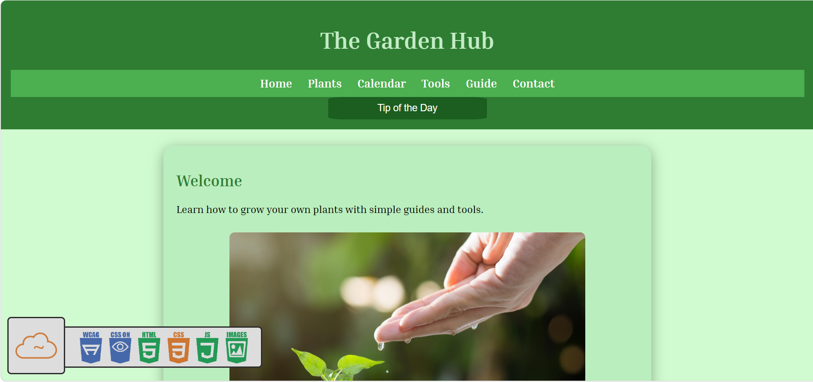

Peer Review 1: Chernoivan, Sasha (Client Project)

Evaluation (Checklist + Feedback)
Submission:
The client project link works correctly and loads the website without issues.
File Naming:
File structure is generally organized and readable, with no major naming issues.
Design - Readability:
The website is clean and easy to read. Sections are well separated and content is understandable.
Design - Colors & Fonts:
The color scheme is simple and visually pleasant, but some areas could use stronger contrast for better readability.
CRAP Principles:
- Contrast: Some text and elements lack strong contrast, making them slightly harder to distinguish.
- Repetition: Consistent layout and styling are used across pages.
- Alignment: Elements are mostly well aligned and structured.
- Proximity: Related content is grouped properly and spaced well.
Page Structure:
The page structure is clear and organized, but some sections could be expanded with more detailed content.
Header:
The header is simple and functional, but navigation could be improved for better user experience.
Main Content:
The content is relevant, but could include more detailed information to better explain the purpose of the website.
Navigation:
Navigation works, but consistency and clarity across pages could be improved.
Footer:
The footer exists, but is missing important contact information such as email, phone number, or social media links.
CSS Issues:
There is a CSS warning related to using width with padding. This should be corrected to follow best practices and avoid layout issues.
JavaScript Issues:
At least one JavaScript issue is present that may affect interactivity or dynamic functionality.
Main Starts with h2:
The main content correctly begins with an h2 heading, improving structure and readability.
Branding / Tagline:
The website has a consistent style, but a stronger branding message or tagline could improve identity.
Additional Issues:
- CSS warning due to width and padding usage
- Missing Project Overview page
- Footer lacks contact information
- Some pages need more detailed content
Overall Requirements:
The website is functional and visually clean, but it is missing important project documentation such as a Project Overview page. There are also minor CSS and JavaScript issues, and the footer needs improvement. Adding these missing elements would make the site more complete and professional.
Suggestions:
- Fix CSS warning related to width and padding
- Add Project Overview page
- Add contact information in footer
- Improve JavaScript functionality and fix errors
- Increase content detail across pages
The Good, The Bad, The Ugly:
The Good: Clean layout, simple design, and easy navigation.
The Bad: Missing project overview, limited content, and footer is incomplete.
The Ugly: Minor CSS and JavaScript issues affecting validation and polish.
Overall:
The website is a good foundation with a clean design and structure. However, it needs additional content, better documentation, and fixes for technical issues to meet full assignment expectations.